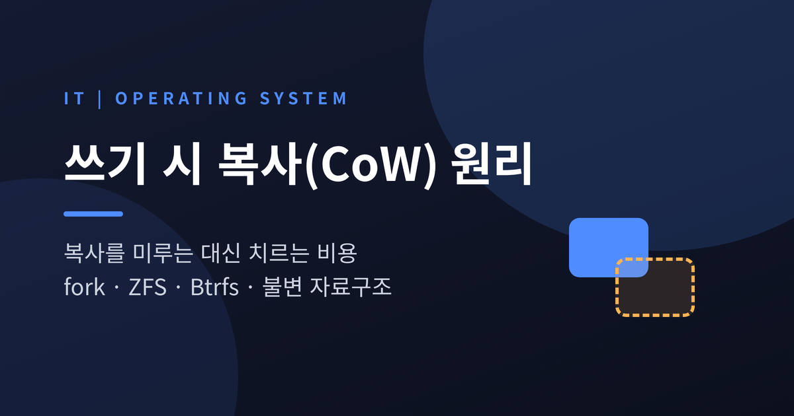
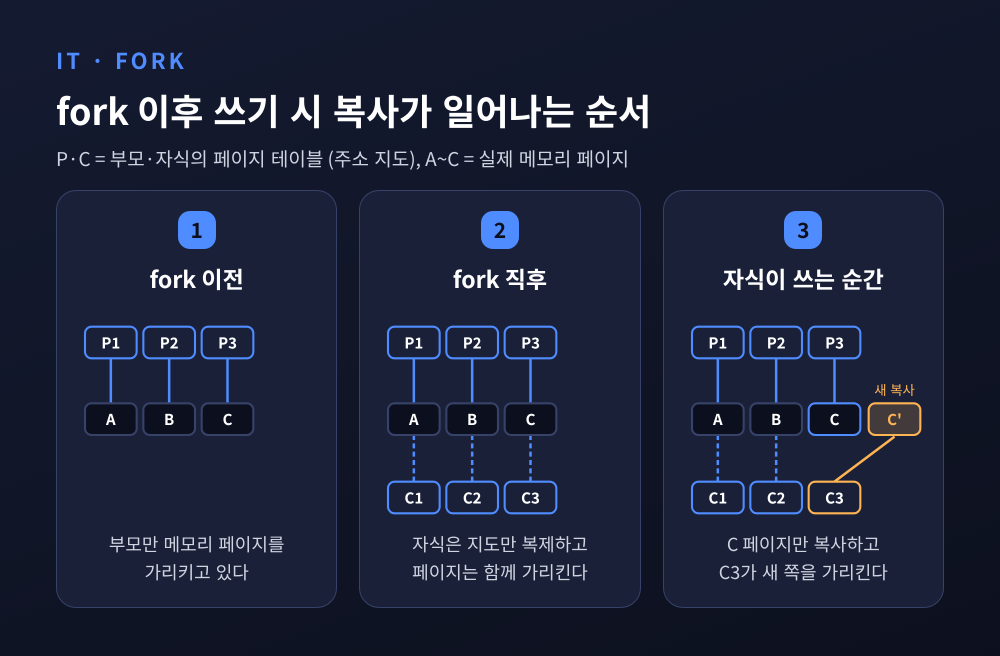
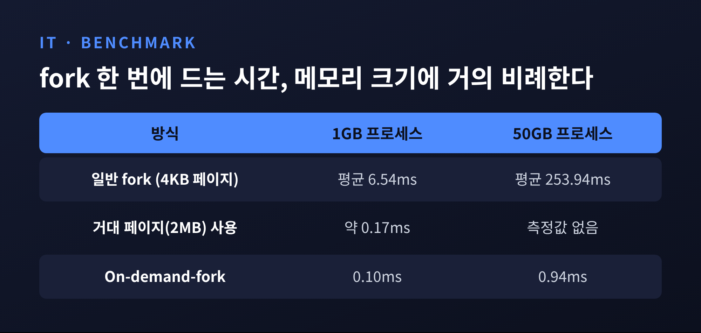
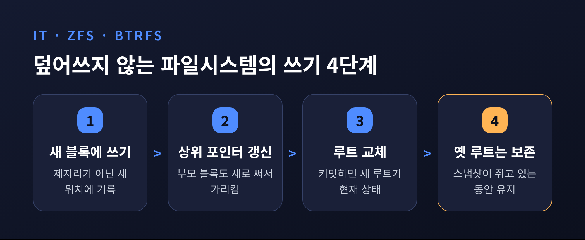
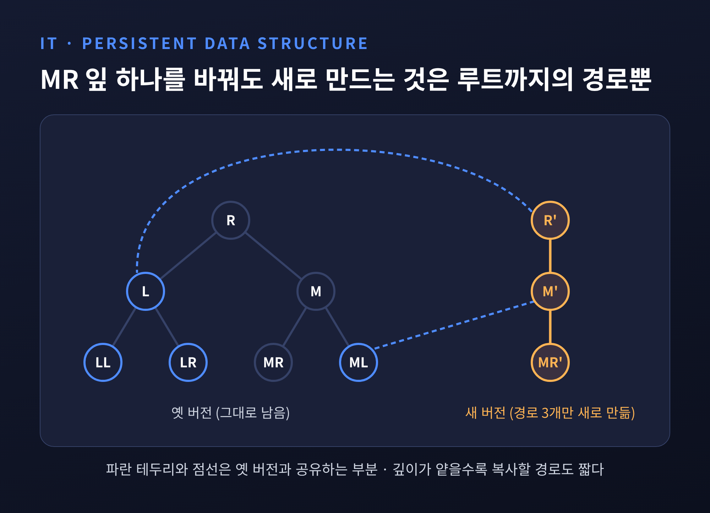
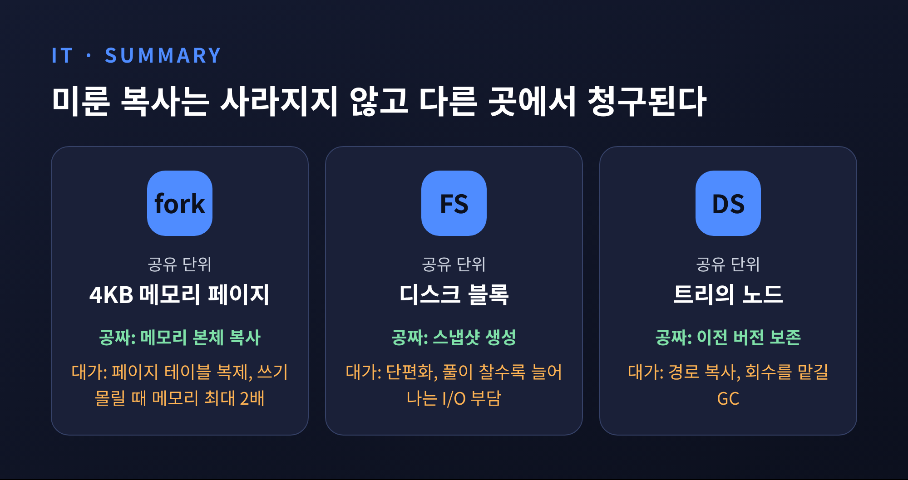

이번 글에서는 쓰기 시 복사(Copy-on-Write, CoW)의 원리를 정리해 보겠습니다. 복사를 "실제로 바꾸는 순간"까지 미루면 fork와 스냅샷은 거의 공짜가 됩니다. 다만 그 비용이 사라지는 것이 아니라 다른 곳으로 옮겨 간다는 점을 fork, ZFS·Btrfs, 불변 자료구조 세 곳에서 확인합니다.
CoW의 규칙은 단순합니다. 같은 데이터를 여럿이 볼 때는 하나만 두고 함께 가리킵니다. 누군가 그 데이터를 바꾸려 할 때에만 그 부분을 따로 복사합니다.
읽기만 하는 동안에는 복사가 한 번도 일어나지 않습니다. 복사본을 만들었는데 아무도 고치지 않는다면, 그 복사는 처음부터 필요 없었던 셈입니다.
그래서 CoW에서 핵심 질문은 "무엇을 공유하고, 무엇이 바뀔 때 복사하는가"입니다. 공유 단위가 곧 비용의 단위가 됩니다. fork에서는 4KB 메모리 페이지, 파일시스템에서는 블록, 자료구조에서는 노드가 그 단위입니다.
옛 유닉스는 fork()를 부르면 부모의 주소 공간을 통째로 복제했습니다. 현대 리눅스는 다릅니다. Zalando 엔지니어링 블로그의 표현대로, 치르는 비용은 부모의 페이지 테이블을 복제하는 시간과 메모리뿐입니다. 실제 페이지는 자식이 쓰려 할 때에만 복사됩니다.

페이지 테이블은 메모리의 "주소 지도"입니다. 4KB 페이지에 엔트리 8바이트라면 메모리 1GB당 약 2MB입니다. Redis 문서의 예로 24GB를 쓰는 인스턴스는 48MB를 복사해야 합니다. 메모리 자체는 공유해도, 지도의 크기는 메모리에 비례해 커집니다.
Purdue 대학 연구진의 측정이 이 점을 잘 보여 줍니다. fork 비용은 호출한 프로세스가 차지한 메모리 크기에 거의 선형으로 늘어납니다.

1GB 프로세스는 평균 6.54ms, 50GB는 253.94ms가 걸렸습니다. 예전엔 "fork는 가볍다"는 말이 통했습니다. 지금은 메모리가 커진 만큼 "가볍되 공짜는 아니다"가 정확합니다.
Redis는 이 비용을 피하지 못하는 대표 사례입니다. RDB 스냅샷은 fork로 자식을 만들고, 자식이 디스크에 쓰는 동안 부모는 계속 요청을 받습니다. 부모가 디스크 I/O를 전혀 하지 않는 구조입니다. 공식 문서는 데이터셋이 매우 크고 CPU가 느리면 fork 때문에 응답이 수 밀리초, 심하면 1초까지 멈출 수 있다고 적고 있습니다.
Redis 문서에 실린 측정값은 환경별 차이가 큽니다. 물리 서버와 신형 EC2 인스턴스는 GB당 대략 9~13ms였고, 구형 Xen 기반 EC2는 6.1GB에 1,460ms가 걸렸습니다. 이 느림은 Xen 특유의 현상이며 가상화 전반의 문제는 아니라고 문서는 설명합니다.
fork 직후에는 메모리가 거의 늘지 않습니다. 하지만 스냅샷이 도는 동안 부모가 데이터를 많이 바꾸면 이야기가 달라집니다. Redis 문서는 쓰기가 많은 환경에서 저장 중 평소의 최대 2배 메모리를 쓸 수 있다고 밝힙니다. 추가 메모리는 그동안 수정된 페이지 수에 비례합니다.
Zalando의 실험은 또 다른 단면을 보여 줍니다. RAM 2GB 가상 머신에 약 1GB를 넣고 BGSAVE를 시도하자 "Cannot allocate memory"로 fork가 실패했습니다. 쓰기가 몰릴 경우를 대비해 커널이 기본 설정에서 약속을 거절한 것입니다. overcommit 설정을 바꾸자 저장은 1.2초 만에 끝났고, 로그에 찍힌 CoW 사용량은 0MB였습니다. 다만 이 실험은 동시 쓰기가 없는 조건이었습니다.
미룬 복사에도 "최악에는 이만큼 필요할 수 있다"는 예약이 따라붙습니다. 그 예약을 커널이 어떻게 다루느냐가 운영의 변수가 됩니다.
페이지를 4KB에서 2MB로 키우면 페이지 테이블이 줄어 fork가 빨라집니다. 논문에 따르면 1GB 프로세스의 fork가 약 0.17ms로, 50배 넘게 빨라집니다. 그러나 거대 페이지의 쓰기 폴트는 4KB 페이지보다 최대 512배 오래 걸릴 수 있습니다. 한 번 쓰는 데 복사할 덩어리가 그만큼 크기 때문입니다.
Redis가 투명 거대 페이지(THP)를 끄라고 권하는 이유가 여기에 있습니다. 문서는 THP를 켠 채 바쁜 인스턴스에서 fork하면 이벤트 루프 몇 번 만에 수천 페이지를 건드려 메모리 대부분이 복사되고, 큰 지연 스파이크가 생긴다고 설명합니다.
복사를 더 미루는 쪽도 같은 법칙을 따릅니다. 연구진이 제안한 On-demand-fork는 페이지 테이블까지 쓰기 시점으로 미룹니다. 1GB 기준 fork는 0.10ms, 50GB는 0.94ms까지 내려갑니다. 대신 최악의 첫 쓰기 폴트는 일반 fork보다 약 5.3배 느립니다. 지도를 복사하는 일을 첫 쓰기가 떠안기 때문입니다.
파일시스템에서의 CoW는 "제자리에 덮어쓰지 않는다"로 요약됩니다. ZFS는 바뀐 데이터를 새 블록에 쓰고, 옛 블록은 아무도 참조하지 않을 때 해제합니다.

ZFS는 블록 포인터에 자식의 체크섬과 위치, 생성 시점을 담은 트리 구조입니다. 꼭대기의 uberblock이 쓰기마다 새로 계산됩니다. 변경은 메모리에 모았다가 기본 약 5초 주기로 한꺼번에 커밋합니다. 커밋이 실패해도 옛 uberblock이 유효하므로 파일시스템은 일관된 채 조금 오래된 상태일 뿐입니다. 그래서 fsck가 필요 없다는 설명이 따라옵니다. (이 구조 설명은 제3자 위키인 Thomas-Krenn 자료를 바탕으로 한 것입니다.)
이 구조에서 스냅샷은 새로 만들 일이 거의 없습니다. 옛 루트를 계속 붙잡아 두면 됩니다. OpenZFS 문서는 스냅샷이 원자적으로 만들어지는 특정 시점의 일관된 이미지라고 설명합니다. Btrfs 문서는 더 직설적입니다. 스냅샷은 즉시 만들어지며 메타데이터에 새 트리 루트 사본을 만들 뿐이라고 합니다. 처음에는 원본과 모든 데이터 블록을 공유합니다.
덮어쓰지 않는 대가는 시간이 지나야 보입니다. Btrfs 문서는 COW에서 데이터를 다시 쓰면 새 복사본이 물리적으로 멀리 놓일 수 있고, 이것이 설계에 내재적이라고 적습니다. ZFS도 순차로 쓴 파일이 시간이 지나며 단편화되고, 풀이 찰수록 심해진다고 알려져 있습니다.
작은 변경도 큽니다. 128KB 레코드에서 8KB만 바꿔도 레코드 전체를 읽어 고친 뒤 새 128KB를 써야 합니다. 삭제조차 새 블록을 써야 하니 여유 공간이 항상 있어야 합니다.
TrueNAS는 풀이 약 50% 찼을 때는 여유롭지만 90% 부근에서는 입출력마다 훨씬 힘들게 일한다고 설명합니다. 흔히 말하는 "80% 규칙"은 절단선이 아니라 지침이라는 단서도 붙입니다. 한 번 쓰고 보관하는 아카이브 풀은 90~95%도 가능하고, 가상화처럼 랜덤 I/O가 많은 환경은 80% 아래의 여유가 필요할 수 있다는 것입니다. 숫자 하나로 외우기보다 워크로드에 맞춰 보라는 이야기입니다.
스냅샷을 오래 쥐고 있으면 또 다른 청구서가 옵니다. Btrfs의 디프래그는 스냅샷과 reflink가 공유하던 extent를 보존하지 못해 공간 사용이 늘 수 있습니다. 스냅샷 삭제도 두 단계로 나뉘어, 블록이 많이 공유됐다면 정리에 시간이 걸립니다. 문서가 못 박듯 스냅샷은 백업이 아닙니다. 블록을 공유하므로 데이터가 손상되면 둘 다 영향을 받습니다.
Btrfs는 아예 CoW를 끄는 선택지도 줍니다. nodatacow 옵션은 제자리 갱신으로 덮어쓰기가 잦은 작업의 성능을 높입니다. 그 대가로 데이터 체크섬과 압축이 함께 꺼지고, 쓰기 도중 장애가 나면 부분 쓰기가 남을 수 있습니다. 안전장치와 속도를 맞바꾸는 셈입니다.
CoW는 메모리와 디스크뿐 아니라 자료구조에서도 쓰입니다. 불변(영속) 자료구조는 수정할 때 이전 버전을 보존합니다. 통째로 복사하면 너무 비싸므로 경로 복사를 씁니다. 바뀐 노드에서 루트까지의 경로만 새로 만들고, 나머지는 옛 버전과 공유합니다.

균형 이진 트리라면 최악의 수정 비용이 O(log n)에 갱신 비용을 더한 정도입니다. 연결 리스트는 O(n)입니다. 어떤 구조를 고르느냐에 따라 "복사할 경로"의 길이가 달라지는 것입니다.
Clojure는 이 방식을 언어의 기본값으로 삼았습니다. 모든 컬렉션이 불변이고, "수정"은 구조 공유로 효율적으로 만든 새 컬렉션을 돌려줍니다. 벡터와 해시 맵은 접근이 log32 N 단계입니다. 단순 계산으로 원소가 약 10억 개여도 깊이는 6단 안팎(32의 6제곱이 약 10.7억)이어서, 복사할 경로도 짧습니다. 불변이므로 스레드 안전하다는 부수 효과도 얻습니다.
아쉬운 점도 있습니다. 노드를 여러 버전이 나눠 쓰다 보니 언제 지워도 되는지 알기 어렵습니다. 그래서 이런 구조는 대체로 참조 카운팅이나 마크 앤 스윕 같은 가비지 컬렉션을 전제로 합니다. 복사를 미룬 대신 회수를 런타임에 맡긴 셈입니다.

세 사례는 같은 계산을 합니다. 공유 단위를 정하고, 바뀌는 만큼만 복사하며, 그 대가를 어딘가에서 치릅니다. fork는 페이지 테이블 크기와 쓰기가 몰릴 때의 메모리로, 파일시스템은 단편화와 여유 공간으로, 불변 구조는 경로 복사와 회수 부담으로 청구서가 돌아옵니다.
정리하면 이렇습니다. 읽기가 많고 쓰기가 드문 작업에는 CoW가 더없이 잘 맞습니다. 쓰기가 잦고 넓게 퍼지는 작업이라면 미룬 복사가 한꺼번에 몰려옵니다. 이때는 Redis의 THP 설정이나 Btrfs의 nodatacow처럼 CoW를 약하게 하거나 끄는 선택이 나옵니다.
"복사는 공짜가 아니라 미뤄진 것이다."
스냅샷이 한순간에 끝났다는 사실에 안심하기 전에, 그 뒤로 무엇이 바뀔지부터 물어보시면 좋겠습니다. 비용의 크기는 그 답이 정합니다.